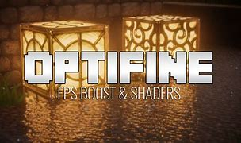
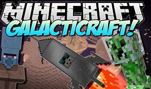
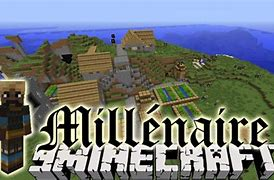
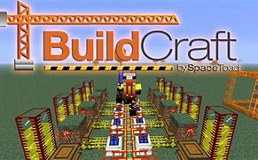

Os gráficos simples do jogo não o fazem menos divertido, mas podem frustrar um pouco o jogador que prefere paisagens mais vistosas. O OptiFine ajuda a melhorar a qualidade de imagem e torna a jogabilidade mais leve. Dependendo da capacidade do monitor, é possível curtir um visual deslumbrante e incrível, com montanhas e praias bem mais realistas.
Com um caráter explorativo, o Galacticraft te permite expandir o seu mundo até mesmo para fora do planeta! Por meio dele, inicialmente, você constrói uma nave espacial e viaja para a lua. De lá, é possível embarcar em uma aventura ainda maior pelo universo, em que a comandante da viagem é a sua criatividade.
O mod aumenta a interação do jogador com as pessoas dos vilarejos presentes no game, tornando possível conversar e fazer amigos. Além disso, ainda é uma boa aula de história, já que permite a criação de vilas com povos de civilizações antigas, como os maias, por exemplo.
Essa modificação permite ao jogador explorar ainda mais o poder de criação já presente no Minecraft. Com ela é possível fazer de tudo! O Buildcraft oferece mais opções para incrementar as suas construções, como o petróleo.
